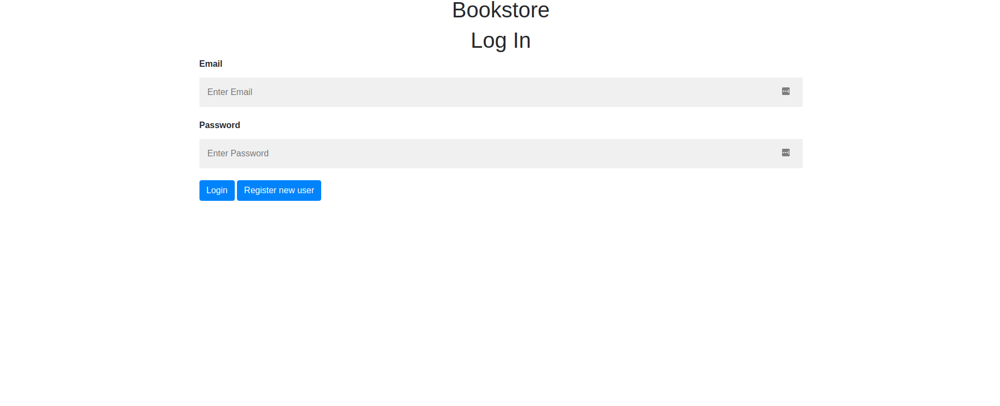
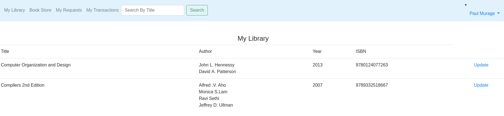
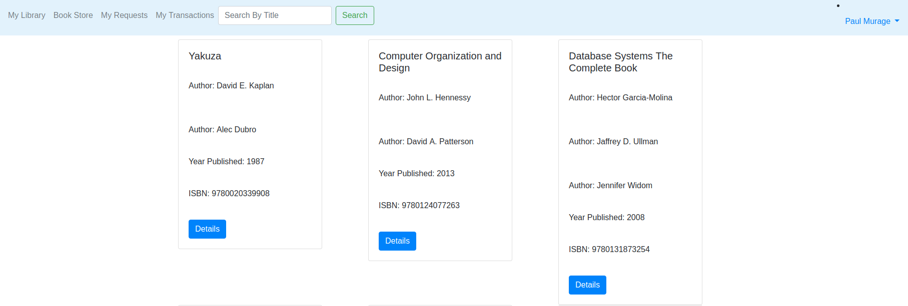
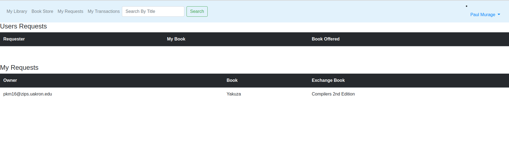
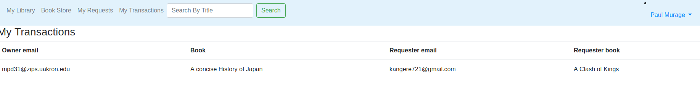
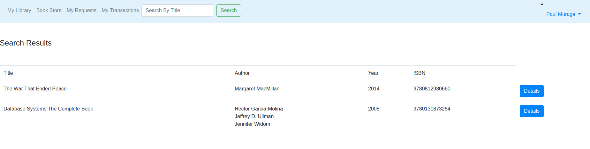

| Screenshot | Description |
|---|---|
|  | Let's start with the Address. Our Landing page should be the login page and here is the link and a screenshot of how it looks like. If this is your first time, you will need to create an account. If you already have your account, proceed to log in. |
|  | Once you have logged in, this will be the first page that you will see. It is the MY LIBRARY page. Here you can add books, and see what books you already have in the system. On this page, you can also update and delete your books. |
|  | Then we have the Book Store page. This is where all the books that are available to trade are in there. You can click on the details page to get more information about the book. |
|  | My request page is where you can see what books you have either requested to trade or if someone has sent you a trade request. |
|  | In the My Transactions page, you will be able to see all the completed trades you have done so far. |
|  | You can also search certain books using their title to make it easier. |